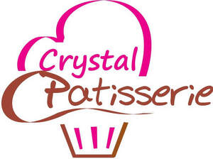

Trade Mark Journal No.2025/050 12 December 2025
UK00004301504 26 November 2025 (29,30,32)

- Class 29
- Fruit desserts; Dairy desserts; Desserts made from milk products.
- Class 30
- Dulce de leche; Petits fours; Petit fours; Petits fours [cakes]; Ice cream; Ice milk [ice cream]; Dairy ice cream; Ice cream desserts; Ice cream with fruit; Fruit ice cream; Ice creams; Ice cream gateaux; Fruit ice creams; Ice creams containing chocolate; Truffle cream sauces; Mixtures for making ice creams; Ice-cream; Pastry; Shortcrust pastry; Pastry dough; Macaroons [pastry]; Puff pastry; Frozen pastry; Pastry mixes; Pastry cases; Pastries; Dough for cakes; Chocolate pastries; Savory pastries; Biscotti dough; Pastries, cakes, tarts and biscuits (cookies); Brownie dough; Quiche [tart]; Eclairs; Prepared desserts [pastries]; Meringue; Pastries with fruit; Fruit pastries; Cookie dough; Frozen pastries; Frozen cookie dough; Meringues; Profiteroles; Pastries filled with fruit; Savory biscuits; Quiche; Quiches [tarts]; Savoury biscuits; Chocolate desserts; Shortbread with a chocolate coating; Shortbread; Pastries containing fruit; Pastries containing creams and fruit; Pastries containing creams; Mixtures for making pastries; Chocolate fillings for bakery products; Fruit filled pastry products; Puddings for use as desserts; Chocolate cakes; Cakes; Scones; Bakery goods; Chocolate biscuits; Quiches; Milk chocolate teacakes; Macarons; Gluten-free bakery products; Mixes for making bakery products; Preparations for making bakery products; Fruit cakes; Chocolate brownies; Chocolate cake; Chocolate truffles; Mousses (Chocolate -); Chocolate mousses; Chocolate coated biscuits; Chocolate fudge; Chocolate sauces; Chocolate sauce; Chocolate syrups; meringues and confectionery; ice cream, sorbets ; sugar, honey, treacle; yeast, baking-powder; salt, seasonings, spices, preserved herbs, sauces and other condiments; ice [frozen water]; coffee, teas and cocoa and substitutes therefor; ice, ice creams and sorbets; ice cream cakes; processed grains, starches, and goods made thereof, baking preparations and yeasts; cake mixes; cake preparations; aromatic preparations for cakes; baking powder; flour for baking; cake flour; cake batter; cake dough; salts, seasonings, flavourings and condiments; flavourings for cakes; flavourings for cakes other than essential oils; chocolate flavourings; sugars, natural sweeteners, sweet coatings and fillings, bee products; sweet glazes and fillings; chocolate-based fillings for cakes and pies; cake frosting; cake icing; topping syrups; chocolate decorations for cakes; dessert souffles; baked goods, confectionery, chocolate and desserts; bread; chocolate; chocolate-coated sugar confectionery; pains au chocolat; chocolate desserts; prepared desserts [confectionery]; crumble; dessert puddings; fruited scones; bakery goods; gluten-free bakery products; chocolate coating; pastries, cakes, tarts and biscuits (cookies); cakes; occasion cakes; sponge cake; cheesecake; chocolate cake; chocolate covered cakes; treacle cake; almond cake; fruit cakes; plum cakes; tea cakes; cupcakes; gateau; strawberry gateau; cake bars; sponge fingers [cakes]; vegan cakes; pastries; pastries .containing creams.
- Class 32
- Sorbets [beverages].
CRYSTAL PATISSERIE LIMITED